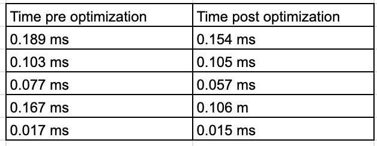
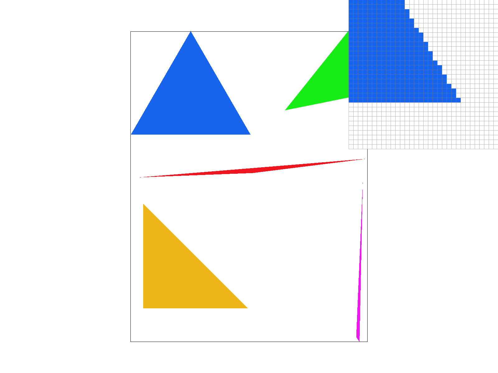
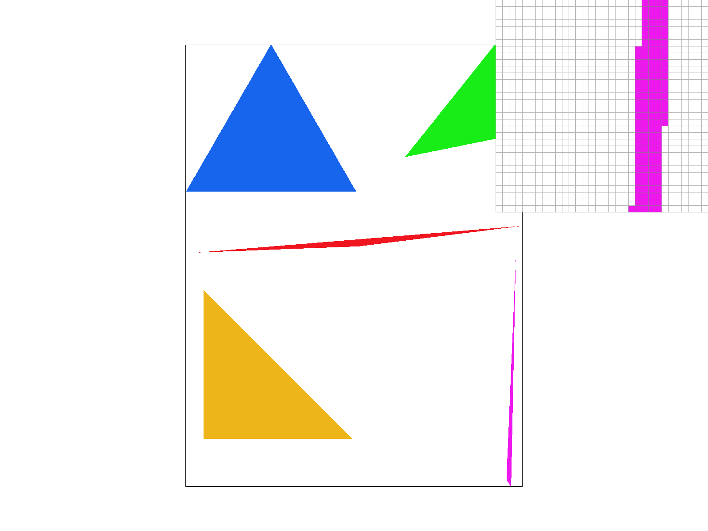
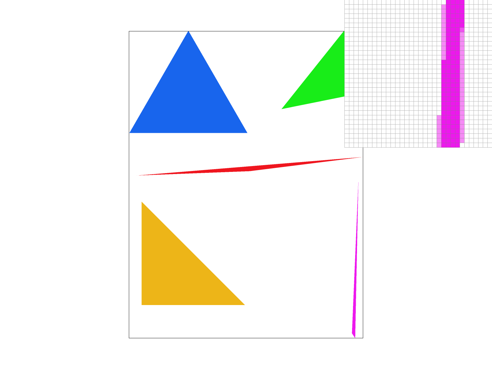
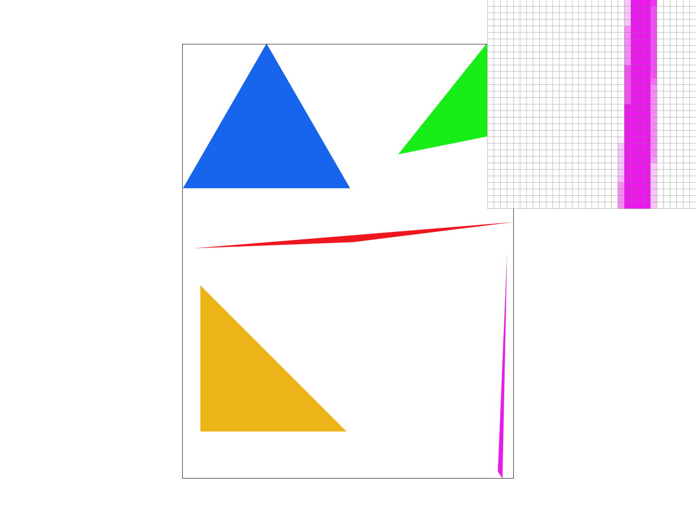
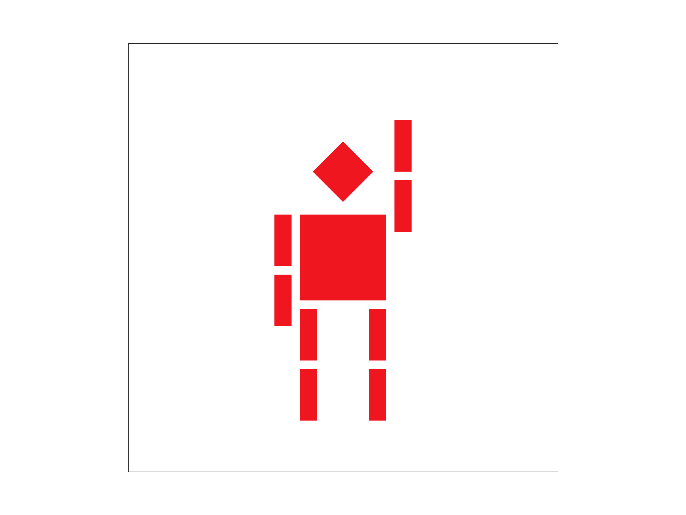
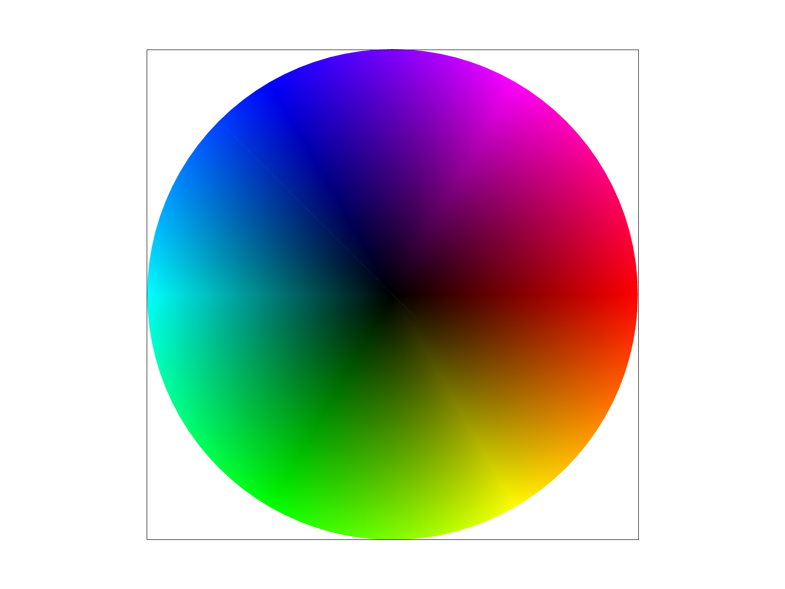
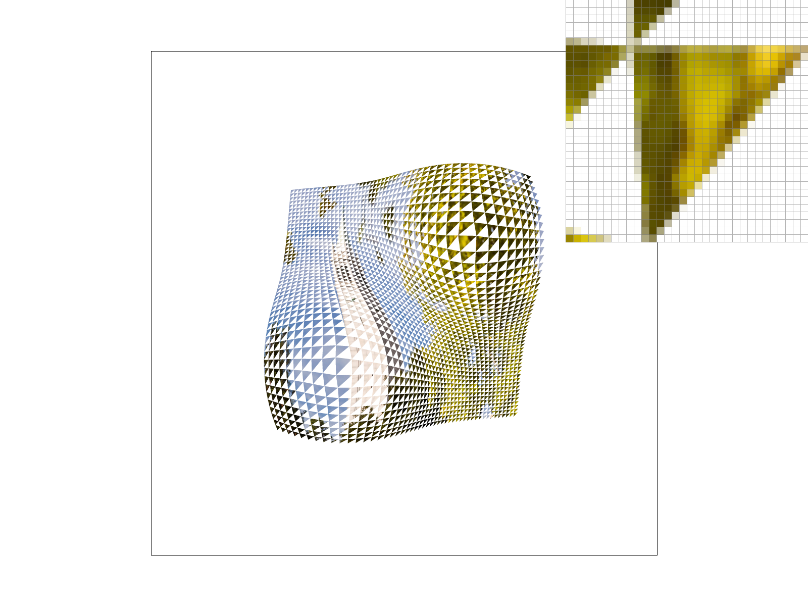
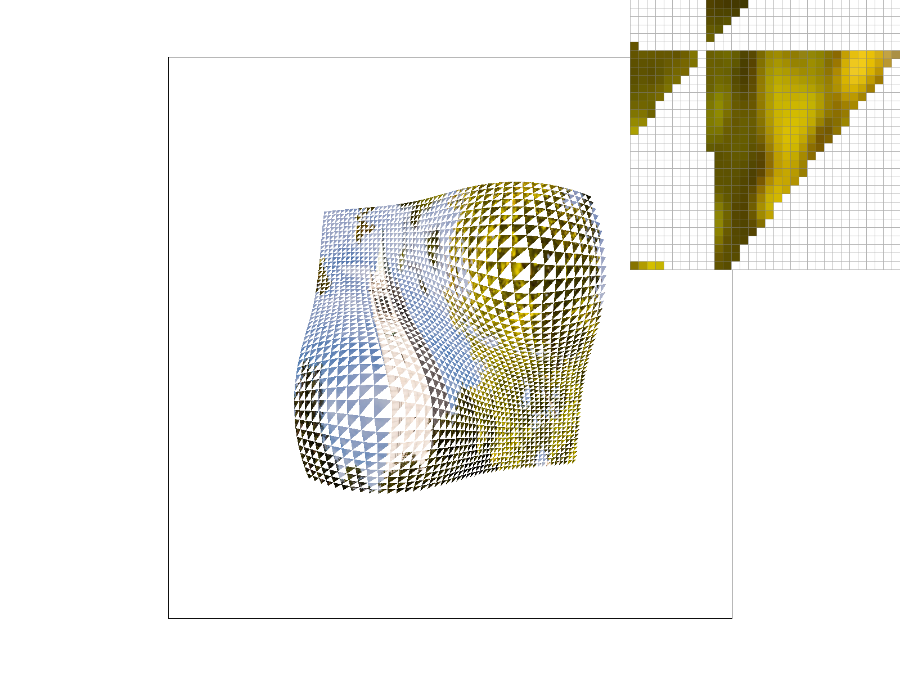
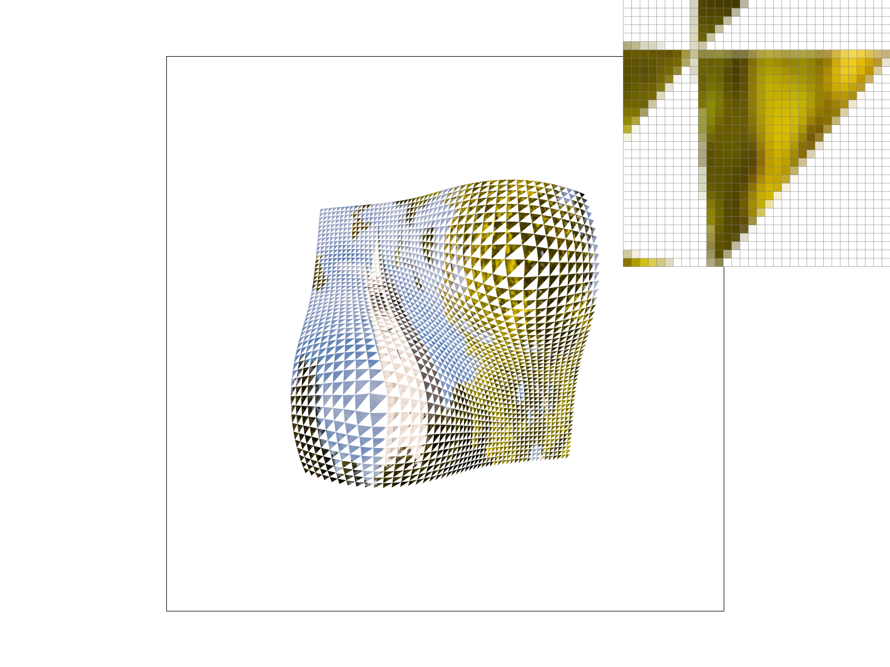

In this assignment, I implemented a rasterizer capable of supersampling, barycentric color interpolation, texture mapping, and mipmap level sampling. I built rasterizers that render triangles with smooth edges and realistic textures. I learned how antialiasing, interpolation, and mipmaps work together to improve image quality. It also deepened my understanding of the memory / computation power / visual tradeoffs of different algorithms. Experimenting with different sampling methods deepened my understanding of graphics rendering and the importance of efficient algorithms.
Task 1: Drawing Single-Color Triangles
I started by finding the min and max x and y coordinates of the triangle vertices to determine the bounding box. Then, I iterated through each pixel within the bounding box and used barycentric coordinates to check if the pixel is inside the triangle. Specifically, I used to edge function and found out if all three edge functions for the pixel are positive/negative - in which case the pixel is inside the triangle should be colored. I then implemented the checking of if an edge is a top-left edge(meaning its either directed upwards or to the left), so that when 2 triangle overlaps a pixel is only colored for one of the triangle. This is the same edge rule that OpenGL uses. If the pixel is inside or on edge of the triangle, I colored the pixel with the specified color. This algorithm is no worse than one that checks each sample within the bounding box of the triangle because it is exactly checking each sample within the bounding box and nothing outside. Then I did an optimization where I factored the redundant arithmetic operations out of the loop. This optimization made the algorithm run faster(timing difference diagram below). This method also colored only the pixels that are inside the triangle, resulting in a clean and accurate rendering of the triangle.

Figure 1: time used to draw each triangle before & after optimization

Figure 2: test4 png
Task 2: Antialiasing by Supersampling
Supersampling divides each pixel into a grid of subsamples. For each pixel, I checked every subsample's position to see if it was inside the triangle. If so, I stored the color in the sample_buffer at the corresponding index. After rasterization, I averaged all subsamples for each pixel to produce the final color in the framebuffer.
Supersampling is useful because it reduces jaggies by averaging multiple color samples per pixel. It helps smooth out sharp transitions. I added subsample loops in rasterize_triangle to check coverage for each subsample. I also modified fill_pixel to set all subsamples for points/lines, so they render correctly. I updated resolve_to_framebuffer to average subsamples for each pixel, and I resized sample_buffer dynamically based on framebuffer size and sample rate.
By checking coverage at multiple subsample locations within each pixel, I was able to determine the fraction of the pixel covered by the triangle. Averaging these values produces a smooth transition at triangle edges.

Figure 3: Sample Rate 1: Only one sample per pixel. Triangle edges appear jagged.

Figure 4: Sample Rate 4: Four subsamples per pixel. Edges are noticeably smoother.

Figure 5: Sample Rate 16: Sixteen subsamples per pixel. Edges are very smooth, with minimal aliasing.
Task 3: Transforms
I modified the original robot SVG to make the robot appear as if it is waving. I did this by applying a rotation transform to both the right and left arm group in the SVG file, rotating them upward and downward, separately. Then I translated them more to the right and left, respectively, so that the arms don't look detached from the body of the robot.

Figure 5: A robot waving
Task 4: Barycentric coordinates
Barycentric coordinates express any point inside a triangle as a weighted combination of its three vertices.I computed the weights (w0, w1, w2) for each sample point representing the point's proximity to each vertex point. Points near vertex 0 have w0 close to 1 and points far from it have w0 close to 0. The sum of weights always equals 1 inside the triangle.I blend the vertex colors using these weights and the colors to interpolate colors. The equation is color = c0 * w0 + c1 * w1 + c2 * w2. This produces a smooth color gradient across the triangle. My implementation computes the edge functions (e0, e1, e2) for each subsample and normalizes them by the triangle area to get the barycentric weights. The test7.svg color wheel demonstrates this as it consists of triangles with red, green, and blue vertices that smoothly blend colors across the interior.

Figure 6: Gradient circle
Task 5: "Pixel sampling" for texture mapping
Pixel sampling retrieves colors from a texture image at specific UV coordinates. I implemented two methods: nearest sampling grabs the single closest texel (pixel) and returns it directly. Bilinear sampling takes the 4 surrounding texels and interpolates between them. This produces smooth gradients. In rasterize_textured_triangle(), I used barycentric coordinates to interpolate UV values across each triangle, then sampled the texture using the selected method.
The difference between methods is dramatic at edges and low sample rates. At 1 sample per pixel, nearest shows a lot of jaggies, while bilinear produces smooth color transitions within the texture but still showing blocky edges due to the low sample rate. At 16 samples per pixel, both improve significantly. Bilinear is superior for visual quality but slightly more expensive computationally.
Figure 7: Sample Rate 1, Nearest Sampling: Only one sample per pixel. Texture appears blocky and jagged.

Figure 8: Sample Rate 16, Nearest Sampling: Sixteen subsamples per pixel. Both texture and edges appears smoother.

Figure 9: Sample Rate 1, Bilinear Sampling: Only one sample per pixel. Texture appears smoother, but the edges are still blocky.

Figure 10: Sample Rate 16, Bilinear Sampling: Sixteen subsamples per pixel. Edges are very smooth.
Task 6: "Level Sampling" with mipmaps for texture mapping
Level sampling uses mipmaps pre computed downsampled versions of the texture to reduce aliasing when sampling distant geometry. I compute the mipmap level by measuring UV coordinate changes across pixels. Larger changes indicate farther geometry needing lower resolution. With L_ZERO, mipmaps are ignored. With L_NEAREST, it picks the closest mipmap level. With L_LINEAR, it interpolates between two adjacent levels (trilinear with bilinear pixel sampling).
There are tradeoffs between the algorithm I choose to use. Supersampling increases memory and computation but provides the best antialiasing. Pixel sampling (nearest vs. bilinear) is fast and memory-efficient but doesn't reduce distant texture aliasing. It also doesn't smooth of the edge of the shapes. Level sampling is memory-efficient and dramatically reduces aliasing at distance with minimal performance cost. Combining level and pixel sampling provides good texture antialiasing without spending too much memory or computation, but doesn't eliminate all artifacts(like the jaggies on the edges of shapes).
I chose to use a chessboard pattern for the texture because it has high contrast and sharp edges, making it easier to see the effects of different sampling methods.